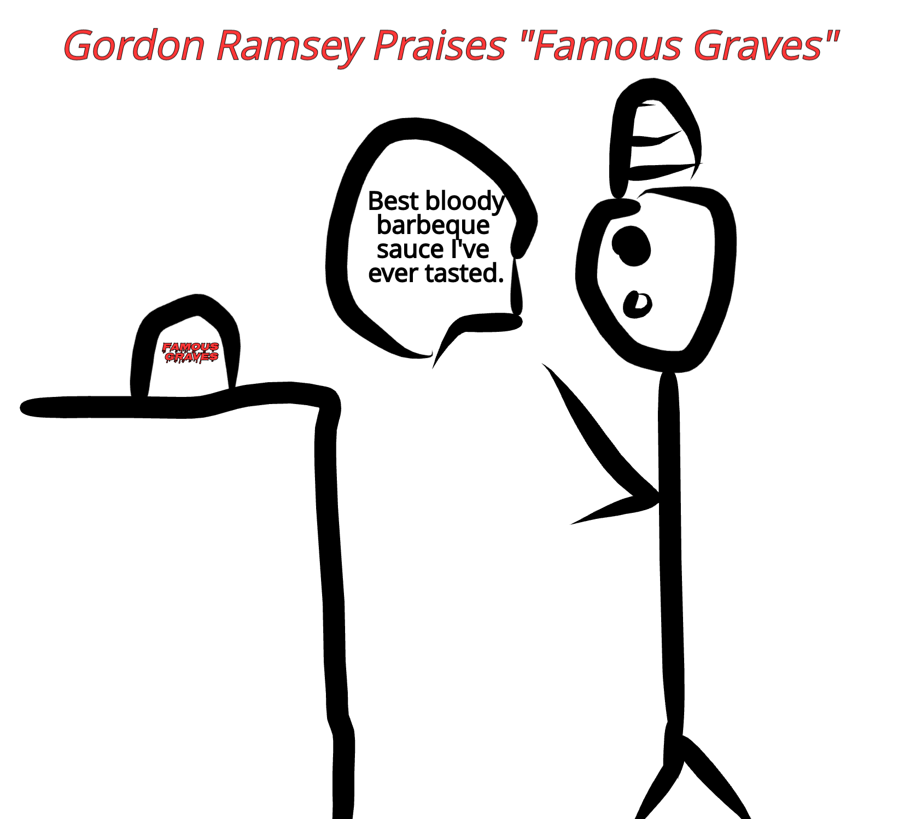
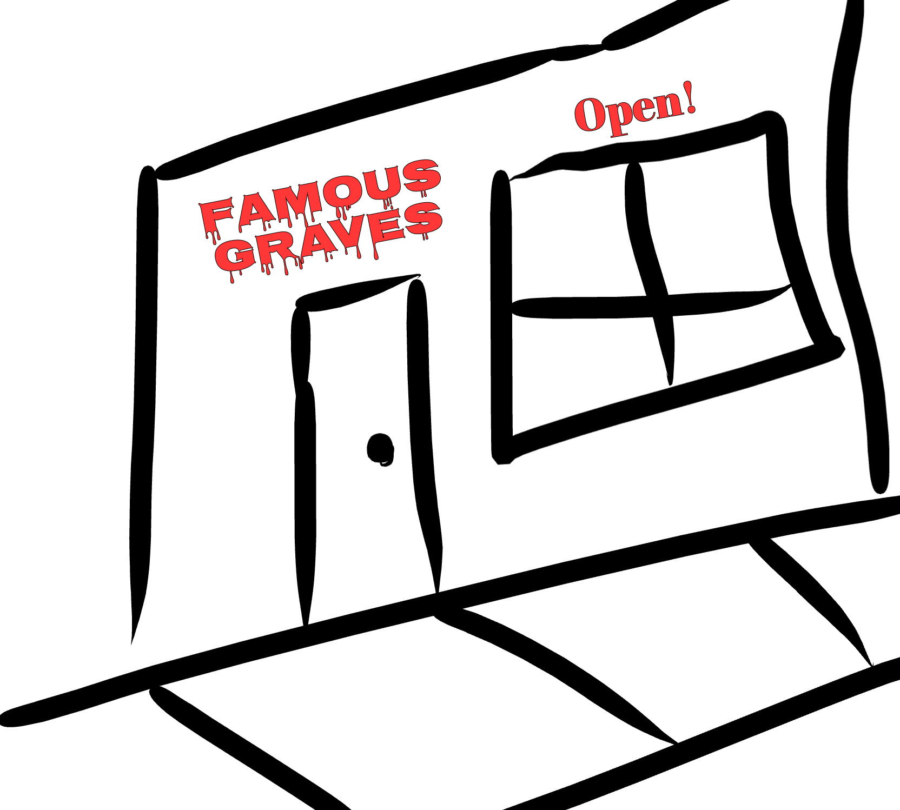

Gordan Ramsey Praises "Famous Graves" Barbeque Sauce 
Gordan Ramsey, a well known chef and food expertise, announced on his show that 'Famous Graves' was the best barbaque sauce he had ever tasted. His reaction was pure joy.
Ramsey offered to buy out the recipe. However, owners Skylar and Tristan were unwilling. Their reasoning for rejecting the offer was because they worked too hard to sell out.
As Famous Graves popularity continues to grow, so does our amount of stores. We are proud to announce the recent opening of our new store in the UK!
"The global expansion of Famous Graves has been a lifelong dream of mine. And it's finally coming true.", owner Tristan says.
In a recent contest done by the National BBQ Sauce Association of America, 'Famous Graves' came out in first place for Best Barbaque Sauce. This is a huge accomplishment for our company. We couldn't have done it without our loyal customers!